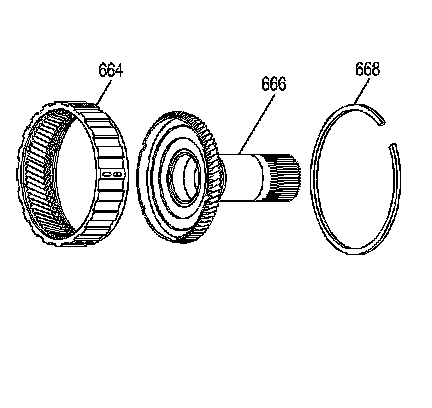
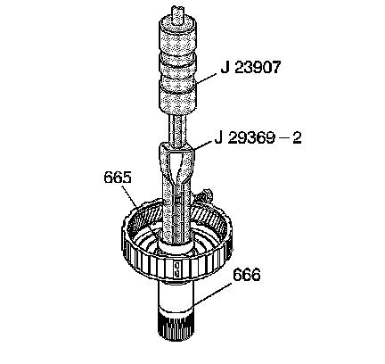
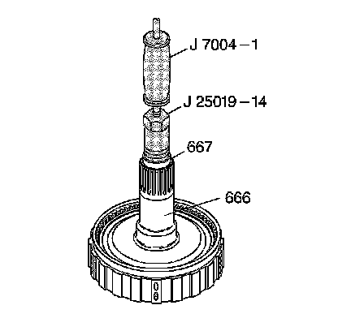
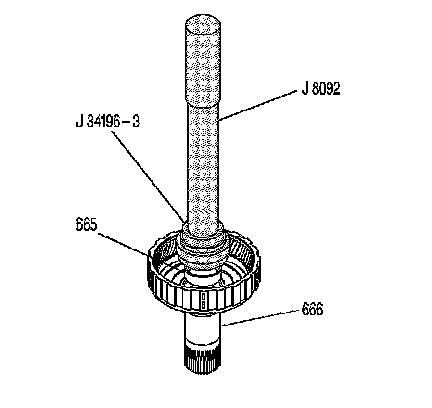
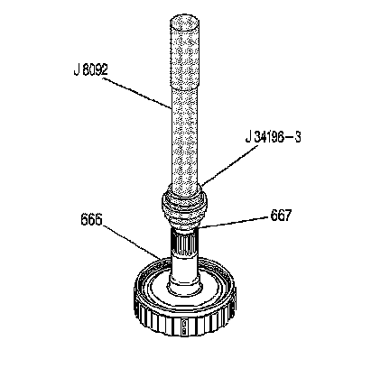

Reaction Carrier Shaft Replacement
Reaction Carrier Shaft Replacement
Removal Procedure
Tools Required
^ J 8092 Universal Driver Handle - 3/4 in - 10
^ J 7004-A Universal Remover
^ J 23907 Slide Hammer with Bearing Adapter
^ J 25019-14 Stator Pump Bushing Remover
^ J 29369-2 Bushing and Bearing Remover 2-3 in
^ J 34196-B Transmission Bushing Service Set

1. Remove the reaction carrier shaft/internal gear retainer (668) and the reaction carrier shaft (666) from the input internal gear (664).
2. Inspect the reaction carrier shaft (666) and the input internal gear (664) for the following defects:
^ Scoring
^ Cracking
^ Damaged or worn bushings
^ A cracked shaft
^ A damaged spline
^ Damaged gear teeth

3. Using J 29369-2 with J 23907, remove the reaction carrier shaft front bushing (665).

4. Using J 25019-14 with J 7004-A, remove the reaction carrier shaft rear bushing (667).
Installation Procedure

1. Using J 34196-3 which is part of kit J 34196-B with J 8092, install a new reaction carrier shaft front bushing (665).

2. Using J 34196-3 which is part of kit J 34196-B with J 8092, install a reaction carrier shaft rear bushing (667).